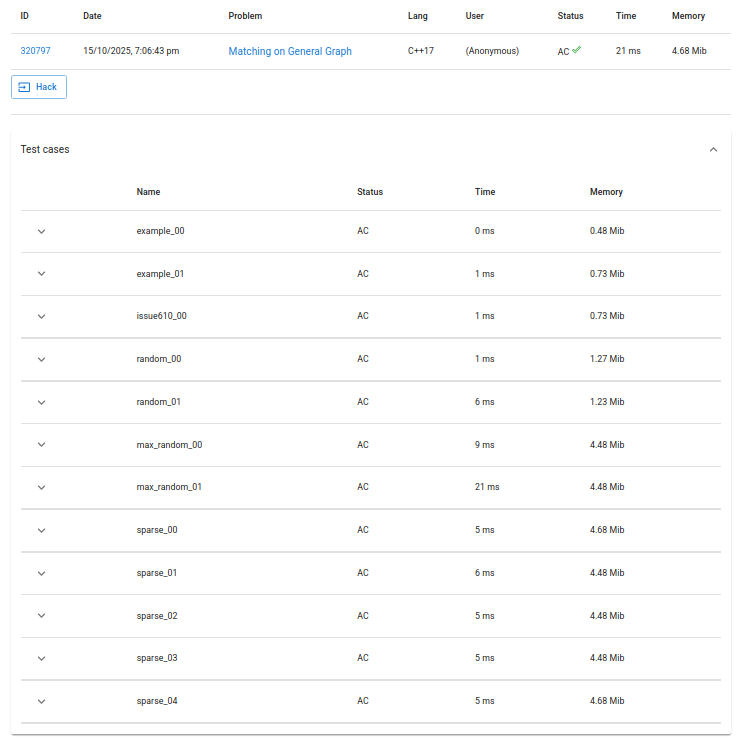

This project implements Edmonds' Blossom Algorithm (also known as the General Graph Maximum Matching Algorithm) in C++. Blossom contraction and alternating-path augmentation are the core techniques that make this possible.
Given an undirected simple graph with ( N ) vertices and ( M ) edges, find the maximum matching: a set of edges such that no two edges share a common vertex, and the number of such edges is maximized.
N M
u0 v0
u1 v1
...
u(M-1) v(M-1)
X
a0 b0
a1 b1
...
a(X-1) b(X-1)
Where:
X = size of the maximum matching(ai, bi) represents one matched edge (ai < bi).struct Graph_Blossom Encapsulates all graph and algorithm operations.
| Member | Type | Description |
|---|---|---|
n, m |
int |
n = number of vertices; m = allocated space for blossoms (≈ 2n) |
matched |
vector<int> |
Stores matched partner for each vertex (or -1 if unmatched) |
depth |
vector<int> |
BFS layer parity: 0 = unvisited, 1 = even, 2 = odd |
blsm |
vector<int> |
Current blossom representative for each node |
parent |
vector<int> |
Parent pointers for BFS tree |
adj_mat |
vector<vector<int>> |
Adjacency matrix representation |
blossom_content |
vector<vector<int>> |
For each blossom, stores contained vertices |
add_edg(u, v) Adds an edge between u and v.
matcher(u, v) Marks vertices u and v as matched (removes from adjacency).
tracer(x) Traces path from vertex x to the BFS root following parent pointers, skipping inner blossom members.
contract_to_blsm(id, x, y, route_x, route_y) Contracts a detected blossom into a single vertex (id), updates adjacency and blossom membership.
lift_path(route_x) Reconstructs the original augmenting path from the contracted representation by expanding blossoms.
solve() Main driver of the algorithm:
| Phase | Description | Complexity |
|---|---|---|
| BFS search | Finding augmenting paths | ( O(N^2) ) per phase |
| Blossom contraction/expansion | Maintaining structure | ( O(N^2) ) |
| Number of phases | Each augmentation increases matching size | ( O(N) ) |
| Total | Edmonds’ classic bound | O(N³) |
| Component | Space |
|---|---|
| Adjacency matrix | ( O(N^2) ) |
| Matching and metadata | ( O(N) ) |
| Blossom tracking | ( O(N) ) |
| Total | ( O(N^2) ) |
g++ -O2 -std=c++17 blossom.cpp -o blossom
./blossom < input.txt > output.txt
7 8
2 0
0 5
5 6
6 1
1 0
1 3
3 4
1 4
3
0 2
1 6
3 4
Here’s a properly formatted “Algorithm Testing” section you can directly append to your README in Markdown format:
The correctness and performance of the implementation were verified using the Library Checker – General Matching Problem dataset.
This online judge provides a comprehensive and well-validated suite of test cases, including:

Thus, this implementation passed all the test cases within time limit.
| Feature | Description |
|---|---|
| Algorithm Type | General graph matching (non-bipartite) |
| Core Idea | Alternating path + blossom contraction |
| Time Complexity | ( O(N^3) ) |
| Space Complexity | ( O(N^2) ) |
| Max Weight Matching | ❌ (only unweighted) |
| Input Constraints | ( N \le 500 ) |